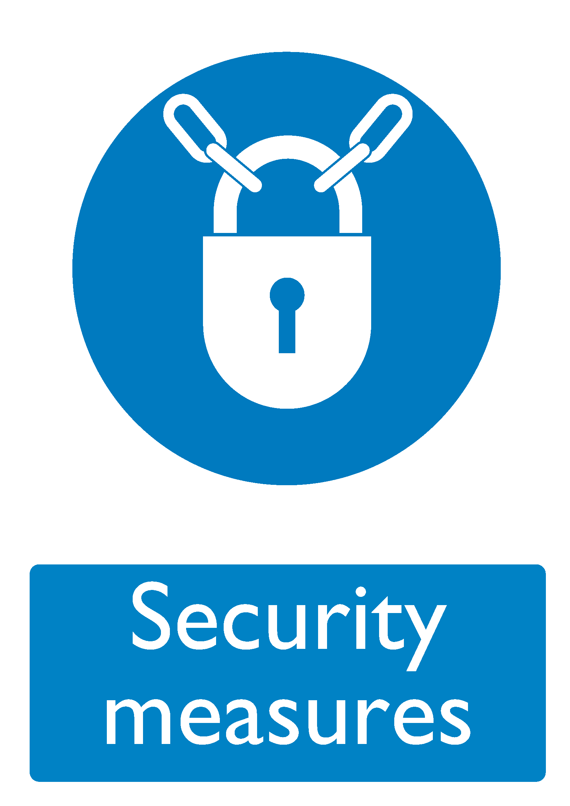

| Control ID (URI) |
https://bhdirectory.github.io/risk/control-register/security-measures.html |
|---|---|
| Control Icon |  |
| Description |
Security measures are put in place where there is the need to restrict access to certain areas or certain items of plant or equipment that may be hazardous or vulnerable to theft, damage or interference. Physical security measures may take the form of locked rooms, cabinets or another type of segregation from public areas. Alarms, monitoring or CCTV may also be used in certain circumstances. In some cases, company policy, procedures and other rules may dictate access. |
| Associated Risks | |
| Further Information |